<!DOCTYPE lake>
<h2 data-lake-id="rDRej" id="rDRej"><span data-lake-id="uc0a4e1cb" id="uc0a4e1cb">学习目标</span></h2><ol list="uead0079b"><li data-lake-id="u43918469" fid="ue163df8b" id="u43918469"><span data-lake-id="ue0b21430" id="ue0b21430">了解触摸按键的应用场景</span></li><li data-lake-id="u1616a0ac" fid="ue163df8b" id="u1616a0ac"><span data-lake-id="u549ab5e8" id="u549ab5e8">了解触摸芯片的通信方式</span></li><li data-lake-id="ube375937" fid="ue163df8b" id="ube375937"><span data-lake-id="u31aae4eb" id="u31aae4eb">熟悉触摸功能编写流程</span></li><li data-lake-id="ua0042d2d" fid="ue163df8b" id="ua0042d2d"><span data-lake-id="u22b70bf8" id="u22b70bf8">掌握I2C读取数据流程</span></li></ol><h2 data-lake-id="p1XJr" id="p1XJr"><span data-lake-id="u4e93f8b2" id="u4e93f8b2">学习内容</span></h2><p data-lake-id="uf7c75eb0" id="uf7c75eb0">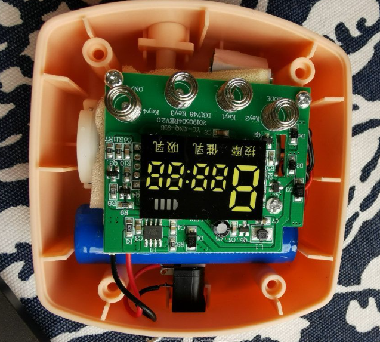</p><p data-lake-id="ub5d83bdd" id="ub5d83bdd">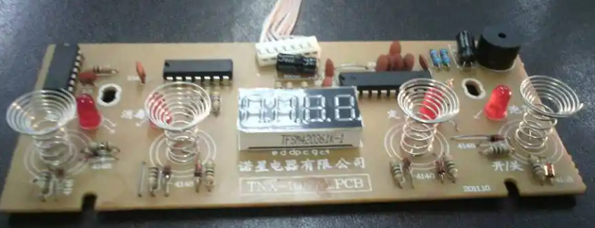</p><h3 data-lake-id="Hfibi" id="Hfibi"><span data-lake-id="u7b494b63" id="u7b494b63">原理图</span></h3><p data-lake-id="ue29a40e4" id="ue29a40e4">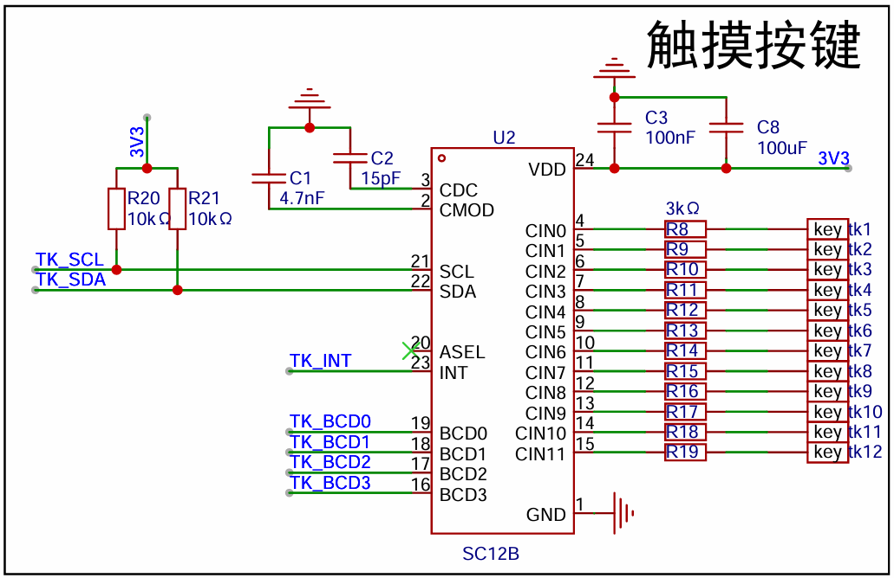</p><h4 data-lake-id="GKN1b" id="GKN1b"><span data-lake-id="uda5be18b" id="uda5be18b">通信方式</span></h4><ol list="u7e32448e"><li data-lake-id="u909a7e34" fid="u2e82d4b6" id="u909a7e34"><span data-lake-id="ub464c761" id="ub464c761">I2C:	</span><code data-lake-id="ue2b3083d" id="ue2b3083d"><span data-lake-id="u9f26b715" id="u9f26b715">TK_SCL</span></code><span data-lake-id="u1e560181" id="u1e560181">、</span><code data-lake-id="u4d7c2094" id="u4d7c2094"><span data-lake-id="u2e77e00c" id="u2e77e00c">TK_SDA</span></code><span data-lake-id="u9a10b8dd" id="u9a10b8dd">、</span><code data-lake-id="u49bde45d" id="u49bde45d"><span data-lake-id="ued6d0e38" id="ued6d0e38">TK_INT</span></code></li><li data-lake-id="uae4aef7b" fid="u2e82d4b6" id="uae4aef7b"><span data-lake-id="u5697c437" id="u5697c437">BCD方式：</span><code data-lake-id="uaf83ddaf" id="uaf83ddaf"><span data-lake-id="u11e40243" id="u11e40243">TK_BCD0</span></code><code data-lake-id="u4fc459d9" id="u4fc459d9"><span data-lake-id="ue03d3cd7" id="ue03d3cd7">TK_BCD1</span></code><code data-lake-id="u4446b93a" id="u4446b93a"><span data-lake-id="u559a21cb" id="u559a21cb">TK_BCD2</span></code><code data-lake-id="u74c938d7" id="u74c938d7"><span data-lake-id="u75dad8e6" id="u75dad8e6">TK_BCD3</span></code></li></ol><h4 data-lake-id="vn9V0" id="vn9V0"><span data-lake-id="u66011b92" id="u66011b92">引脚说明</span></h4><p data-lake-id="ubf682426" id="ubf682426">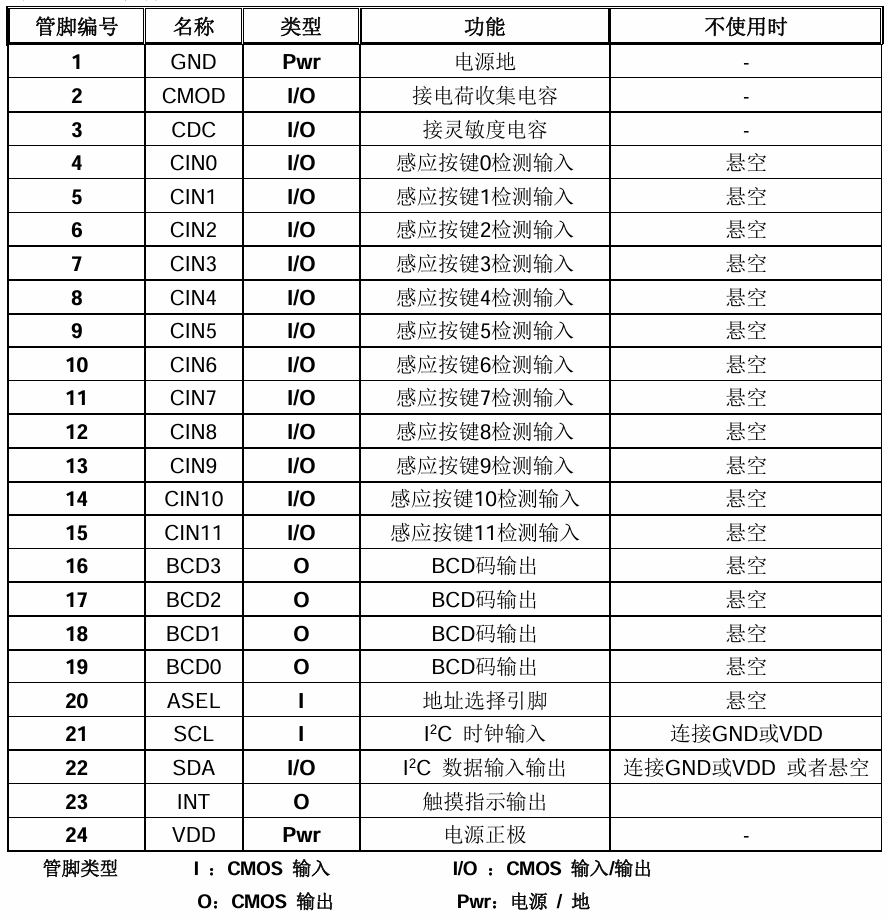</p><h4 data-lake-id="otd9E" id="otd9E"><span data-lake-id="u60b879c7" id="u60b879c7">布线工艺</span></h4><p data-lake-id="ud6e95584" id="ud6e95584">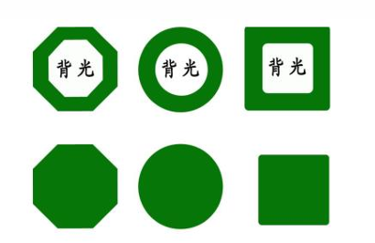</p><ol list="uabfa040d"><li data-lake-id="ua96f7af3" fid="uf35a5ed2" id="ua96f7af3"><span data-lake-id="u6c24e60a" id="u6c24e60a">通过大面积铺贴，将铺铜区作为触摸点。</span></li><li data-lake-id="u9085435c" fid="uf35a5ed2" id="u9085435c"><span data-lake-id="u80228059" id="u80228059">在触摸区域周边，则不铺铜，防止误触</span></li><li data-lake-id="u39233a95" fid="uf35a5ed2" id="u39233a95"><span data-lake-id="ud55195ce" id="ud55195ce">亚克力面板贴合。作为开发板，不可以直接裸漏在用户面前，通常上面贴合一个亚克力，通过触摸亚克力板，达到触摸普通区效果，类似手机贴了个膜。</span></li></ol><p data-lake-id="u25126116" id="u25126116"><br/></p><h3 data-lake-id="M4rRK" id="M4rRK"><span data-lake-id="u3fb5e988" id="u3fb5e988">驱动编写</span></h3><p data-lake-id="u20061f84" id="u20061f84"><span data-lake-id="ubad25b17" id="ubad25b17">设备地址</span></p><p data-lake-id="ud8d85faf" id="ud8d85faf">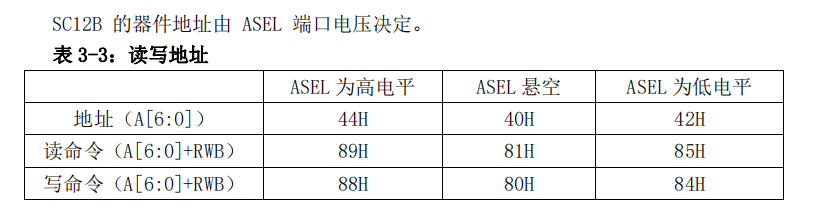</p><p data-lake-id="uf4b88175" id="uf4b88175"><span data-lake-id="ue348a795" id="ue348a795">由于ASEL是悬空状态，则芯片的地址如下：</span></p><ul list="u51566993"><li data-lake-id="ue09b540d" fid="ude308d2b" id="ue09b540d"><span data-lake-id="u2e5442f8" id="u2e5442f8">设备地址：0x40</span></li><li data-lake-id="u3f2e315f" fid="ude308d2b" id="u3f2e315f"><span data-lake-id="u3ad182b8" id="u3ad182b8">写地址：0x80</span></li><li data-lake-id="ufb929387" fid="ude308d2b" id="ufb929387"><span data-lake-id="ua8158ed7" id="ua8158ed7">读地址：0x81</span></li></ul><h4 data-lake-id="yTRPk" id="yTRPk"><span data-lake-id="u9ab26040" id="u9ab26040">寄存器</span></h4><p data-lake-id="uf3ead2e4" id="uf3ead2e4">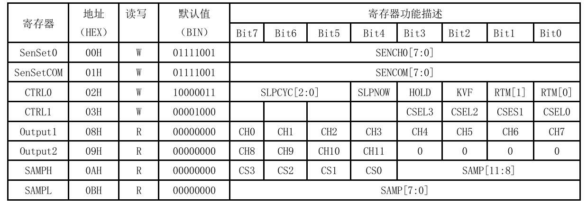</p><ul list="u42433511"><li data-lake-id="u2cc3503f" fid="ufa2c63ce" id="u2cc3503f"><span data-lake-id="u03600618" id="u03600618">重点是寄存器地址，是否能够读写，每个bit位的含义</span></li></ul><p data-lake-id="u9038ff9e" id="u9038ff9e">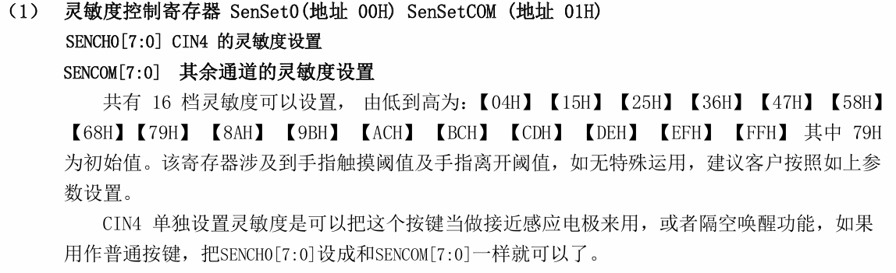</p><p data-lake-id="u40b7d14f" id="u40b7d14f">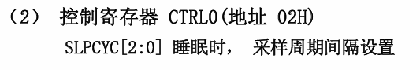</p><p data-lake-id="u736ff38a" id="u736ff38a">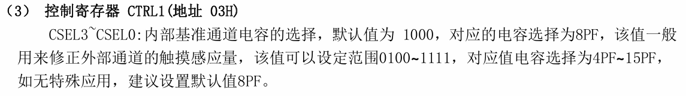</p><p data-lake-id="u2861e98a" id="u2861e98a">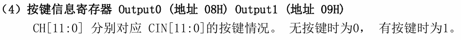</p><p data-lake-id="u89130018" id="u89130018">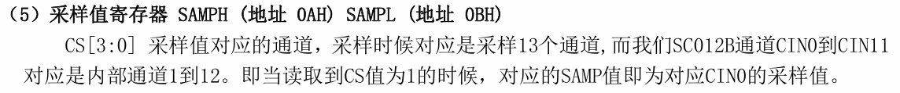</p><h3 data-lake-id="GzEP9" id="GzEP9"><span data-lake-id="u7cf16bc3" id="u7cf16bc3">驱动封装</span></h3><ol list="u226ad42c"><li data-lake-id="ue65b970d" fid="u2856af53" id="ue65b970d"><span data-lake-id="u7ac38c14" id="u7ac38c14">接口设计，知道哪些按键被按</span></li></ol><span class="yuque-card-unsupported">[codeblock]</span><ol list="u226ad42c" start="2"><li data-lake-id="u635a30bf" fid="u2856af53" id="u635a30bf"><span data-lake-id="ud491d745" id="ud491d745">按键状态</span></li></ol><span class="yuque-card-unsupported">[codeblock]</span><ol list="uf11e01e1" start="3"><li data-lake-id="u3e9deb30" fid="ucf9b3aaf" id="u3e9deb30"><span data-lake-id="ufe6e1160" id="ufe6e1160">按键被按操作说如何知道的</span></li></ol><p data-lake-id="uf64ff3f0" id="uf64ff3f0"><span data-lake-id="u73de393d" id="u73de393d">结果是通过读取寄存器知道按键状态的，那什么时候去读取装？</span></p><ol list="uc5fd648e"><li data-lake-id="ub94d31d7" fid="u62793dad" id="ub94d31d7"><span data-lake-id="u0a599f8b" id="u0a599f8b">轮询，间隔一段时间就去访问一下触摸芯片</span></li><li data-lake-id="ua73abf20" fid="u62793dad" id="ua73abf20"><span data-lake-id="u450d674c" id="u450d674c">当用户操作了，才去访问。</span></li></ol><p data-lake-id="u1c9a93d0" id="u1c9a93d0"><span data-lake-id="ue7974cb0" id="ue7974cb0">两种策略理论都行，从功耗角度思考，轮询不停访问，资源消耗过高。</span></p><p data-lake-id="u108e8bba" id="u108e8bba"><span data-lake-id="u0381d01b" id="u0381d01b">用户操作才访问，这个时机如何知道是重点。通常需要芯片支持，以中断体现，触摸芯片有个IRQ引脚，当用户操作了，会触发中断，中断触发后，再去访问。</span></p><span class="yuque-card-unsupported">[codeblock]</span><p data-lake-id="ud5a07e94" id="ud5a07e94"><br/></p><span class="yuque-card-unsupported">[codeblock]</span><span class="yuque-card-unsupported">[codeblock]</span><h2 data-lake-id="MbQTi" id="MbQTi"><span data-lake-id="ub13ba7bc" id="ub13ba7bc">练习题</span></h2><ol list="uc2dc848e"><li data-lake-id="ubf5a152d" fid="u62276842" id="ubf5a152d"><span data-lake-id="ua401154a" id="ua401154a">touch key驱动编写</span></li></ol><p data-lake-id="u601cfcfe" id="u601cfcfe"><br/></p>